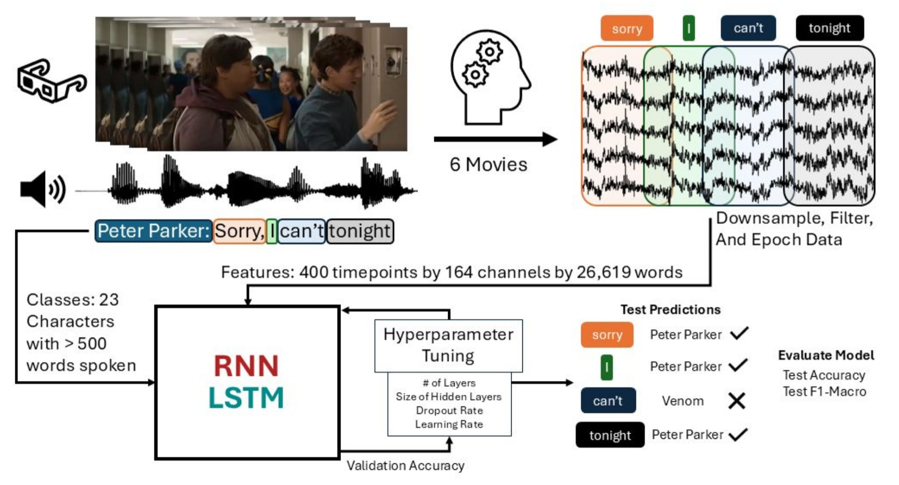

Speaker Modeling
Leveraging strategic color-coding to translate complex model analysis into an intuitive visual narrative for technical audiences.
These artifacts are sourced from my final project for CS 229: Introduction to Machine Learning. For our final project, we were interested in using deep learning models on neural movie watching data to identify which character was speaking at a given time just from the neural signal. My partner mainly worked on the model training part of this project while I worked on the pre- and post-processing stages (preparing the data, analyzing results, and creating the data visualizations).
This project served as a great opportunity to create more complex data visualizations due to the scope of the data we were working with. Not only did we test many different combinations of model architectures, but we performed additional analysis on the predictions of our models to understand where they went wrong. Additionally, though the TAs grading our work were familiar with the machine learning side of the project, they had no domain knowledge, so I had to put a lot of work in to make it digestible for a technical (but not expert) audience.
This project utilizes many science communication techniques to draw in the audience. Color in particular is used deliberately throughout the poster. The process diagram, the most accessible entry point in the project, is bright and colorful with specific words color-coded to give a sense of continuity throughout the diagram. Similarly, the main theme colors (red and gray) are used both to separate the different sections of the poster but also to divide and denote the different model architectures throughout.

When you first look at the poster your eyes are immediately drawn to the diagram on the left-hand side. Partially this is because as English speakers we read from left to right, but also because its bright colors and movie stills are very eye-catching. This was a purposeful decision because the process diagram is the most accessible way for someone to get acquainted with our project as it provides an overview of the entire process—from raw data to final results. The use of color in this diagram is key to maintaining a sense of continuity throughout the process. Each word is assigned a color which allows the viewer to see how the various parts of the pipeline relate to each other. The models are assigned a unique color that are then reused throughout the rest of the poster. All of this serves to give the poster a sense of cohesion and facilitates quick understanding of our results.